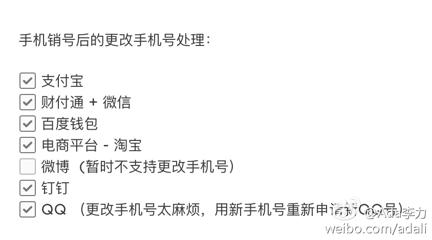

#创业#这两天评测护肤类App，发现不少是垃圾。比如某App里全是图文内容，还基本都是知识新闻通稿的集合，App打开内容的速度还很慢。脑子进水了，才要花钱做这么一个App，本来是公众号就可以解决的事情。

Ada李力
2017-02-07
Ada李力
2017-02-07
曾经用个手机号注册了各种网站和App上一堆小号，最近刚发现被销号了。在找回原来的手机号和使用新手机号之间，犹豫了下，决定还是用新手机号，因为新手机号属于靓号，好记。
花了半天，把重要的网站和App上的手机号做了变更，没有想象得那么麻烦，但是很花时间，折腾了一个下午。
尽量不要换手机号。
花了半天，把重要的网站和App上的手机号做了变更，没有想象得那么麻烦，但是很花时间，折腾了一个下午。
尽量不要换手机号。
- 
Ada李力
2017-02-07
在中国联通网站上开了电子发票，果然方便，可惜中国移动还没有这个服务。